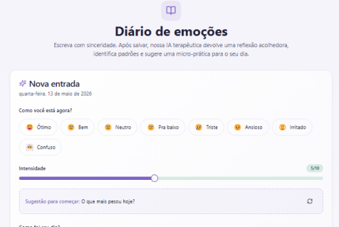

Mentalicid
Plataforma de apoio emocional e organização da saúde mental, em formato de diário de emoções.
- Problema
- Registrar o que se sente é difícil sem um espaço guiado, e perceber padrões ao longo do tempo é ainda mais.
- Solução
- A pessoa registra o humor, a intensidade e como foi o dia. Depois de salvar, recebe uma reflexão acolhedora, padrões identificados e uma micro-prática para o dia.
- Meu papel
- Design da interface no Figma, UX/UI e modelagem em UML.